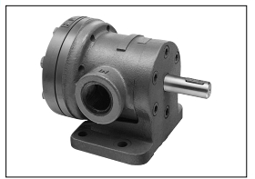
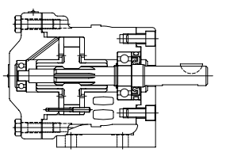
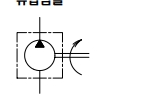

적용 작동유
무기호 : 석유계 작동유
F3 : 인산에스테르계 작동유
HYDRAULICS / VANE PUMP / V-104/124/134/144 SERIES
제품소개 › 유압 › 펌프 › 정용량형 베인 펌프
Fixed displacement vane pumps V-104,124,134,144 series
V-104·124·134·144 단일 정용량형 베인 펌프 시리즈의 형식과 기본 사양입니다.

FIXED DISPLACEMENT VANE PUMP
PRODUCT TECHNICAL DATA
제품 외관, 내부 단면 및 유압 심벌을 통해 V-104/124/134/144 시리즈의 기본 구성과 적용 특성을 빠르게 확인할 수 있습니다.

PRODUCT TECHNICAL DATA
V-104·124·134·144 시리즈는 설치 방식과 용량기호를 선택할 수 있는 정용량형 베인 펌프입니다. 석유계·물·글리콜계 작동유 조건별 사양을 카탈로그 기준으로 확인할 수 있습니다.

MODEL & SPECIFICATION
MODEL CODE
위 번호는 아래 선택 항목과 대응합니다. 실제 형식 선정은 운전 조건에 따라 기술 검토가 필요합니다.
무기호 : 석유계 작동유
F3 : 인산에스테르계 작동유
V-104 / V-124 / V-134 / V-144
시리즈별 용량기호
10 : V-104 시리즈
20 : V-124·134·144 시리즈
무기호 : 우회전
LH : 좌회전
축측에서 볼 때 흡입포트 위치
S36 : 물·글리콜계 작동유
STANDARD SPECIFICATION
| 시리즈 | 토출량 L/min | 최고 사용압력 MPa | 최고 회전수 min⁻¹ | 최저 회전수 min⁻¹ | 무게 kg |
|---|---|---|---|---|---|
| V-104 | 5.7 – 36.3 | 7 | 1,200 – 1,800 | 600 | 9.5 |
| V-124 | 48.6 | 1,500 | 23.6 | ||
| V-134 | 61.5 – 94.2 | 1,200 – 1,500 | |||
| V-144 | 119 | 1,200 |
DOCUMENT ACCESS
자료를 전에 확인해 주세요.